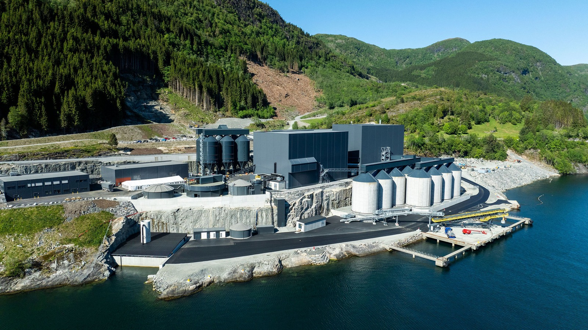

NORDIC MINING
ENGEBØ RUTILE & GARNET

LIVE DIGITAL TWIN
OPUS ONE
OPERATION
Engebø Rutile & Garnet · ONE Operation
All of Engebø's operations in one live, AI-ready platform
Already running at Engebø. We're not starting from zero — we're activating more of the architecture, from operating core to predictive, agent-supported intelligence.
Pitch outline|v0.1|Nordic Mining · Engebø Rutile & Garnet
NORDIC MINING
ENGEBØ RUTILE & GARNET
Today's reality
/ Heavy industry
Too many systems — and people are the only thing connecting them
SC
SCADAtags · alarms · trends
ER
ERPorders · stock · invoices
LI
LIMS / Labsamples · quality
RE
Reportingrebuilt by hand
CM
CMMSwork orders · backlog
DO
Documentsmanuals · drawings
SU
Supplierservice · warranty
IO
Sensors / IoTraw signals
MANUAL
MANUAL
No single source of truth
People copy, interpret and re-key between systems by hand — slow, error-prone, and impossible to scale or automate.
Engebø Rutile & Garnet · ONE Operation
Illustrative — typical heavy-industry system landscape
02 / 14
NORDIC MINING
ENGEBØ RUTILE & GARNET
ONE Operation
/ One source of truth
The same systems — unified into one source of truth
SCADA / Historian
ERP / Procurement
LIMS / Lab
Supplier
Documents
Sensors / IoT
CMMS
Excel / Email
ONE
OPERATION
ONE SOURCE OF TRUTH
Engebø Rutile & Garnet · ONE OperationOne live, governed model — every workflow builds on it03 / 14
NORDIC MINING
ENGEBØ RUTILE & GARNET
Schedule
Assets
Maintain
MORE
COMMINUTION · A-CRC-01
1,460t/h
Throughput · 96% of design
PRODUCT SILOS · SIL-R/G
78 / 64%
Rutile / garnet silo fill
RUTILE SHIPMENT · QUAY-1
62%
MV vessel · loading in progress
MILL 02 · BEARING DE
5.2mm/s
Vibration above threshold · advisory
TAILINGS · FJORD
Turbidity 12 NTU · within consent
ENGEBØ — DIGITAL TWIN · POINT CLOUD + LIVE TELEMETRY
Engebø ▸ Plant Overview ▾
Search assets, tags, work orders…
LIVE
SYNCED 2s AGO
EH
+
−
▦
⤢
61.47561° N 5.03390° E · 104.2 m 312° 71°
ASSETS · TASKS
W24
W25
W26 · NOW
W27
W28
Mill 02 — bearing inspectionWO-4821 · advisory
Rutile circuit — recovery tuningSIM-209 · in progress
Quay — vessel loading windowSHIP-114 · scheduled
Schedule
Assets
Maintain
MORE
Assets27
3150-CV-018REGISTERING
Primary Mill Feed Conveyor 1
4110-SA-035REGISTERING
Wet Plant Feed Sampler
3210-SC-047REGISTERING
Mill Discharge Screen 1
3210-SC-006REGISTERING
Rod Mill Primary Screen 1
Streams23
24ACTIVE
Primary milling circuit feed
15ACTIVE
Clarified water to rod mill screen u/s sump
26ACTIVE
Rod mill primary screen 1 undersize
Engebø Rutile & Garnet ▸ 3210-SC-006
LIVE
EH
3210-SC-006Rod Mill Primary Screen 1ACTIVE
✓REGISTERING
READY
INSTALLED
3D MODEL · ROTATING
Rod Mill · 3210-ML-01512.4 RPM · LIVE
✓DIGITAL TWIN
→
2ASSET · 3210-SC-006
→
3START WORK
Everything to act on this asset, in one place.
AttributesSignalsMaintenanceIssuesPartsDiagram
LIVE VALUES
DOL — Active Power0kW
DOL — Thermal load6,14%
RDOL · Rod Mill Primary Screen 1 — Motor Currentno signal
DOL — Current14,25A
DOL — Runtime10 705,43h
DOL — Runtime, Starts303count
NEXT
+Add inventory requirement
MARK ASSET AS READY
ACTIONS
+Set name
+Set owner of asset
+Upload 3D model
+Attach signal group
+Add document reference
+CREATE NEW MAINTENANCE
▶ START WORK FROM CONTEXT
+Copy from existing maintenance
+Reference existing maintenance
HISTORY · 58
Create new maintenance
a year ago
a year ago
NORDIC MINING
ENGEBØ RUTILE & GARNET
Next step · simulation
/ The loop
Test measures before they affect the plant
A digital twin / process model is most valuable when it is connected to decisions, work orders and operational approval.
1
Real-time data
→
2
Bottleneck / deviation
→
3
Simulate scenario
→
4
Recommend action
→
5
Human approval
→
6
Execute + learn
↺ Continuous learning loop — results feed the next scenario
+1–3%
ABB / Boliden (Aitik) — throughput lift from digital twin + APC in grinding simulation.
BHP describes the digital twin as a test environment for scenarios before any real-world change.
Engebø Horizon · OPUS ONE Operation
Sources: ABB/Boliden case · BHP · McKinsey agentic AI
06 / 14
Work
Assets
MORE
Engebø Rutile & Garnet ▸ Process ▸ Live mass balance
LAST 12H · 10sLIVE
Crushing
2,297t
Milling
2,375t
Fine garnet
81.6t
Coarse garnet
37.5t
Rutile
7.41t
Garnet quality
94.5%
Live mass-balance twin · t/h
ROM Feed
196 t/h
Crushing
220 RPM
Rod Mill
1,256 kW
Wet + Dry
separation
Tailings → Fjord
≈184 t/h
Fine garnet
6.14 t/h
Coarse garnet
4.00 t/h
Rutile
1.06 t/h
Live readings · product streams scaled for legibility vs tailings
Simulation
RUNNING
BaselineOptimise
Optimise production
nowsimΔ
Throughput196 t/h→203 t/h+3.6%
Rutile output1.06→1.16 t/h+9%
Garnet output10.1→11.0 t/h+8%
Energy / tonne6.4→6.1 kWh/t−4.7%
Lever: rebalance rod-mill feed & WHIMS split — tested in the twin before it touches the plant.
Plan major serviceRELINE DUE
Rod Mill 3210-ML-015 — liner & bearing
W29W30W31 ✓W32
Recommended window: Week 31, low-demand · 18 h. Simulation avoids ~3.2 kt at risk vs an unplanned stop, and aligns parts & crew.
Schedule work order
Re-run
NORDIC MINING
ENGEBØ RUTILE & GARNET
ONE Operation × the flow
/ Our impact
Intelligence on every step of the flow
Events, predictions and agents act inside the live process — not beside it.
ONE Operation — event-driven intelligence layer
EVENTS · PREDICTIVE ML · AGENTS IN-LINE · HUMAN APPROVAL · AUDIT
Process Optimisation
Energy & throughput
Tune comminution & concentration to lift t/h, lower kWh/t.
Maintenance Advisor
Predict before stop
Mills & pumps: failure modes flagged before they break.
Simulation Agent
Recovery tuning
Lab + telemetry tested in twin before changing the plant.
Planning Agent
Dispatch & shutdown
Silos, stock and ship timing aligned to maintenance windows.
Green assurance
Tailings & fjord
Continuous monitoring of tailings to the fjord, fully traced.
Comminution
crush · screen · mill
Mills & Pumps
rotating assets
Concentration + Lab
recovery · quality
Silos & Shipment
rutile · garnet
Tailings → Fjord
thickener · disposal
Platform effect — up to
+40%equipment uptime
−30%maintenance cost
+25%asset lifespan
Engebø Horizon · ONE OperationIntelligence inside the operation — not beside it08 / 14
NORDIC MINING
ENGEBØ RUTILE & GARNET
Agent-based operations
/ The human gain
Agents give time back on the floor
The first gain isn't an "autonomous plant". It's less friction in every shift log, every fault, every work order and every service clarification.
LIVE
Potential savings — as we implement
6,900
hours / year returned
Realised step by step as workflows go live.
Basis: 50 roles × 3 hrs/week × 46 weeks — conservative against published field-service benchmarks of 7+ hours/week in low-value and admin work.
Basis: 50 roles × 3 hrs/week × 46 weeks — conservative against published field-service benchmarks of 7+ hours/week in low-value and admin work.
Where the hours come from — the agent loop
1
Shift brief
assembled from the latest events
2
Fault triage
with ranked suggestions
3
Document retrieval
right manual, right revision
4
Work-pack + parts
job ready before the wrench turns
5
Service report
drafted as structured data
6
Learning log
feeds the models for next time
Engebø Horizon · OPUS ONE OperationBenchmarks: Salesforce · BCG · McKinsey field service — pilot to be calibrated locally09 / 14
NORDIC MINING
ENGEBØ RUTILE & GARNET
Maintenance
/ The climb
From better routines to predictive maintenance
Predictive maintenance needs structure first: the right tag, failure cause, spare part, inspection data and service history.
1Foundation
Stabilise the routines
PM plan, inspection rounds, cause codes and standard job plans.
2Data in work
Data quality, in the flow
Work orders auto-enriched with tag, alarm trend, documentation and parts.
3Condition-based
Condition-based operation
Vibration, temperature, process deviation and history linked to assets.
4Predictive
Predictive + service optimisation
Risk, recommended action, parts and supplier support proposed before stoppage.
30–50%
less machine downtime
18–31%
lower maintenance cost
20–40%
longer asset life
The agent won't replace experts — it ensures experts get the full context before the job starts.
Engebø Horizon · OPUS ONE OperationBenchmarks: McKinsey · IBM predictive maintenance10 / 14
OPUS ONE · Nordic Mining
The journey
11 / 13
01
Foundations
Working on the basics
WE ARE HERE
02
Core
Established routines & core functionality
03
Optimisation
Future optimisation
04
End game
Automation & agentic leverage
TODAY
AGENTIC OPERATIONS
OPUS ONE · Nordic Mining
Effectiveness
12 / 13
Mine-to-Mill Integration
Connecting blasting, crushing, and separation into a single optimisation loop
Rutile Recovery Ramp
Baseline → target trajectory
Q4 2025
53%
Q1 2026
60%
Mar 2026 target
91%
Sensitivity Analysis
Impact of 1% recovery improvement
Product
Volume delta
Revenue / yr
Margin impact
Rutile
TiO₂ ≥ 95%
+1 200 t
$1.8M
+2.4 pp
Garnet
Industrial grade
+3 400 t
$0.9M
+1.1 pp
Ore feed
Combined stream
—
$2.7M
+3.5 pp
"Every percentage point of rutile recovery we add goes straight to the bottom line — the mine-to-mill data loop makes those gains repeatable."
Nordic Mining
Engebø Operations
OPUS ONE · Nordic Mining
In summary
13 / 13
01
One source of truth
A unified data foundation eliminates shadow systems and gives every team the same operational picture — in real time.
02
Digital twin at the centre
The process model runs continuously, validating sensor data and surfacing the gap between how the plant should behave and how it actually does.
03
Simulate before you act
Every major operational decision — schedule change, setpoint shift, maintenance window — is tested against the twin before it reaches the plant floor.
04
Agentic leverage
As the foundation matures, autonomous agents take over routine decisions — freeing operators to focus on exceptions and strategic choices.

Nordic Mining · Engebø
OPUS ONE
Operation
Operation
"Get the core right — and everything scales from it."